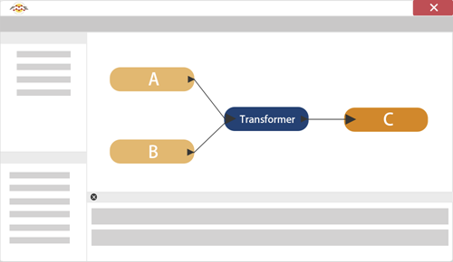

Videos are provided in this course if you prefer to watch instead of reading the text below. Note that some Quiz answers might require you to read the text.
After completing this lesson, you’ll be able to:
Whereas filter transformers divide data into different streams, other transformers bring data streams together, merging the data according to a set of user-defined conditions. Here (for example) incoming streams A and B are joined together into a new stream, C:

To combine multiple streams of data, FME provides users the capability to append or merge (or join) their data. The two techniques, although seemingly similar, yield different results. When datasets are appended, additional rows (in FME, features) are added to the attribute table. However, when datasets are merged or joined, additional columns (in FME, attributes) are added.
Append
Datasets are typically appended when there is no change to the table schema or data model. Appending can use the same schema since the values of one dataset are added after the existing values of another.
If the table schemas are different, the output will contain missing values for the columns not contained in both datasets.

Appends should be used in instances where additional rows or records are added to the dataset. Appends are performed by bringing together multiple feature connection lines into a single input port on a transformer or writer feature type.

This example workspace appends records from both tables into a single table.
Joining or Merging
Datasets should be combined by merging when additional attributes need to be added to the table schema or data model.
Merging requires a common attribute to join on, ensuring that the new attributes are correctly matched within the output. There can be missing values within either dataset provided the attribute being merged upon does not contain missing values.

Datasets can be merged using a variety of transformers, including the FeatureMerger (depicted below) and the DatabaseJoiner. To join datasets using their spatial location, use the SpatialFilter or SpatialRelator.

This example workspace merges the attributes from both tables into one table.
To merge data it is necessary to define a relationship for the basis of the join, and this is done with one of a number of transformers.
These transformers allow you to merge not just data that is being processed by the workspace but provide the ability to form a join against a database or other external dataset.
Joins in FME can either be based on matching attribute values (DatabaseJoiner or FeatureMerger/FeatureJoiner), or they can be based on a spatial relationship such as an overlap between features or proximity from one feature to another (NeighborFinder or SpatialRelator).